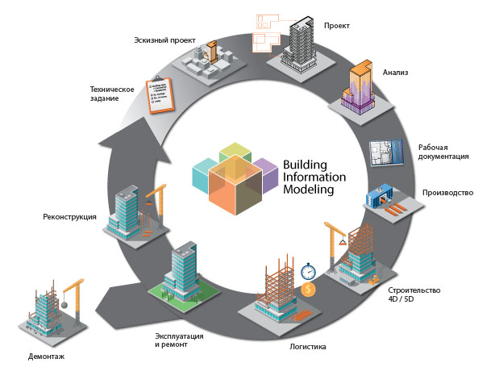

Здесь мы начинаем путь в интересный и перспективный мир bim моделирования.
BIM (Building Information Modeling) – это технология, которая позволяет создавать и использовать цифровые 3D-модели зданий или сооружений, содержащие информацию о геометрических, физических и функциональных характеристиках объекта. Эта технология применяется на всех этапах жизненного цикла здания – от проектирования и строительства до эксплуатации и реконструкции.
Основные аспекты BIM:
Цифровая модель:
BIM-модель – это не просто 3D-макет, а многогранная информационная система, в которой каждый элемент объекта имеет свои параметры и данные.
Интегрированная работа:
BIM способствует сотрудничеству между всеми участниками проекта (проектировщиками, строителями, заказчиками), предоставляя им доступ к единой информационной базе.
Управление информацией:
BIM-модель помогает контролировать все этапы строительства, от проектирования до сдачи объекта, и позволяет быстро реагировать на изменения.
Эффективность и экономия:
BIM помогает сократить затраты, оптимизировать процессы и повысить качество строительства, а также улучшить эксплуатационные характеристики здания.
Преимущества BIM:
Улучшение координации:
BIM-модель позволяет выявлять и устранять конфликты в проекте на ранних стадиях, что приводит к сокращению затрат на переделки.
Повышение эффективности:
BIM помогает оптимизировать процессы проектирования, строительства и эксплуатации, что приводит к экономии времени и средств.
Повышение качества:
BIM позволяет контролировать качество строительства на всех этапах, что приводит к улучшению эксплуатационных характеристик здания.
Улучшение коммуникации:
BIM-модель предоставляет всем участникам проекта единую платформу для обмена информацией, что улучшает координацию и сотрудничество.
Применение BIM:
Проектирование:
BIM-модель используется для создания и анализа проекта, выявления ошибок и оптимизации решения.
Строительство:
BIM-модель помогает строителям спланировать и выполнить работы, а также контролировать их ход.
Эксплуатация:
BIM-модель используется для управления объектом, проведения ремонта и реконструкции, а также для планирования будущих изменений.
В России BIM называется ТИМ (Технология Информационного Моделирования), а также используют такие термины как ЦИМ (Цифровая Информационная Модель) и СОД (Среда Общих Данных).
Таблица требований к проектной документации
| Таблица Б.1 – Состав проектной документации на стадии проект (П) объекта производственного назначения (предприятия, состоящего из отдельного здания, сооружения или их комплексов, инженерных и транспортных коммуникаций), выполненной по ТИМСО | ... |
|---|---|
| Генеральный план и организация транспорта | |
| Решения по инженерной \ плана защите территории | |
| Технологические решения | |
| Управление производством | |
| Доступность для маломобильных групп населения | |
| Архитектурно-строительные решения | |
| Инженерные сети, системы и оборудование | |
| Инженерно-технические мероприятия по гражданской защите и мероприятия по предупреждению чрезвычайных ситуаций (ИТМ ГОЧС) | |
| Автоматизированная система \nмониторинга зданий и \nсооружений | |
| Система обеспечения комплексной безопасности и антитеррористической защищенности | |
| Таблица Б.2 – Состав проектной документации на стадии проект (П) для строительства инженерных сетей, выполненной по ТИМСО | Формат \nконкретного применяемого ПО САПР и/или \nформат IFC (либо другой открытый \nформат, позволяющий \nпередать достаточное \nколичество информации из \nисходного файла) |
| План и схема трассы (ситуационная схема) | |
| Строительные решения | |
| Инженерное оборудование | |
| Инженерно-технические мероприятия по обеспечению безопасности эксплуатации и защита инженерных сетей и оборудования от коррозии, а также система обеспечения \nкомплексной безопасности и антитеррористической защищенности для особо важных объектов | |
| Основные рабочие чертежи | |
| Состав проектной документации на стадии проект (П) на строительство объектов жилищно-гражданского назначения), выполненной по ТИМСО | |
| Генеральный план | |
| Архитектурные решения | |
| Доступность для маломобильных групп населения | |
| Строительные решения | |
| Технологические решения | |
| Решения по инженерному оборудованию и инженерным системам | |
| Основные чертежи | |
| Система обеспечения комплексной безопасности и антитеррористической защищенности для особо важных объектов, высотных зданий и их комплексов | |
| Таблица Б.3 – Состав проектной документации на стадии проект (П) на строительство объектов жилищно-гражданского назначения), выполненной по ТИМСО | формат конкретного применяемого ПО САПР и/или формат IFC (либо другой открытый формат, позволяющий передать достаточное количество информации из исходного файла) |
| Генеральный план и транспорт | |
| Технологические решения | |
| Архитектурно-строительные \nрешения | |
| Доступность для \nмаломобильных групп \nнаселения | |
| Инженерное оборудование, сети и системы | |
| Мероприятия по предупреждению чрезвычайных ситуаций | |
| Таблица В.2 – Состав проектной документации на стадии рабочий проект (РП) на строительство объектов жилищно-гражданского назначения, выполненной по ТИМСО | |
| Архитектурно планировочные, строительные решения и остальные необходимые разделы проекта | |
| Доступность для маломобильных групп населения |